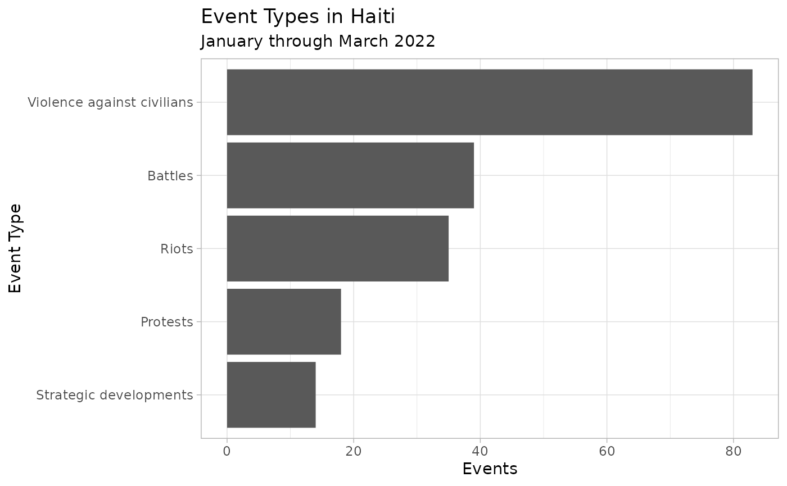
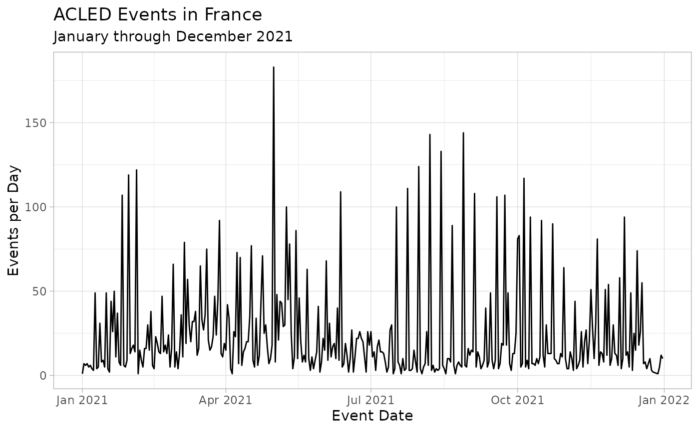
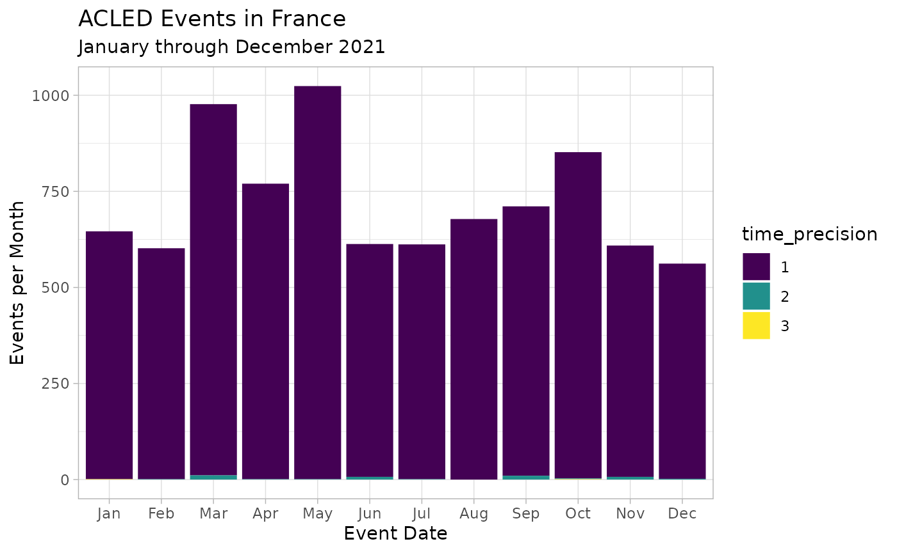

This page describes the variables ACLED data and shows provides usage examples via the acledR package. Users should consult the complete guide summarizing ACLED’s methodology at here for more details on each variable.
- The Variable List tab provides a basic description of each ACLED variable.
- The Variable Details tab provides more information for key variables, including event and sub-event types, actors and interactions, time, geography, fatalities, and event notes.
- Within each Variable Details tab, there is a simple analysis illustrating using the data in R.
Overview
The ACLED project codes reported information on the type, agents, location, date, and other characteristics of political violence events, demonstrations and select politically relevant non-violent events. ACLED focuses on tracking a range of violent and non-violent actions by political agents, including governments, rebels, militias, identity groups, political parties, external actors, rioters, protesters and civilians.
Political violence is defined as the use of force by a group with a political purpose or motivation. ACLED records political violence through its constituent events, the intent of which is to produce a comprehensive overview of all forms of political disorder, expressed through violence and demonstrations, within and across states. A politically violent event is a single altercation where often force is used by one or more groups toward a political end, although some non-violent instances – including protests and strategic developments – are included in the dataset to capture the potential pre-cursors or critical junctures of a violent conflict.
The fundamental unit of observation in ACLED is the event. Events involve designated actors – e.g. a named rebel group, a militia or state forces. They occur at a specific named location (identified by name and geographic coordinates) and on a specific day.
Variable List
| Variable | Description | Values |
|---|---|---|
| data_id | Numeric code of event ID | Numeric code |
| iso | A numeric code for each individual country | Numeric ISO codes |
| event_id_cnty | An individual identifier by number and country acronym (updated annually) | Numeric identifiers |
| event_id_no_cnty | An individual numeric identifier (updated annually) | Numeric identifiers |
| event_date | The day, month and year on which an event took place | Date in dd-mm-yyyy format |
| year | The year in which an event took place | Date in yyyy format |
| time_precision | A numeric code indicating the level of certainty of the date coded for the event | 1 = Actual date; 2 = Specific week or weekend; 3 = Middle of week or weekend |
| event_type | The type of event | Battles; Violence against civilians; Protests; Riots; Strategic Developments; Explosions/Remote violence |
| sub_event_type | The type of sub-event | Armed clash; Government regains territory; Non-state actor overtakes territory; Sexual violence; Attack; Abduction/forced disappearance; Chemical weapon; Air/drone strike; Suicide bomb; Shelling/artillery/missile attack; Remote explosive/landmine/IED; Grenade; Peaceful protest; Protest with intervention; Excessive force against protestors; Violent demonstration; Mob violence; Agreement; Arrests; Change to group/activity; Disrupted weapons use; Headquarters or base established; Looting/property destruction; Non-violent transfer of territory; Other |
| actor1 | The named actor involved in the event | Character string of actor name |
| assoc_actor_1 | The named actor associated with or identifying actor1 | Character string of associated actor name |
| inter1 | A numeric code indicating the type of actor1 | 1 = State Forces; 2 = Rebel Groups; 3 = Political Militias; 4 = Identity Militias; 5 = Rioters; 6 = Protestors; 7 = Civilians; 8 = External/Other Forces |
| actor2 | The named actor involved in the event | Character string of actor name |
| assoc_actor_2 | The named actor associated with or identifying actor1 | Character string of associated actor name |
| inter2 | A numeric code indicating the type of actor1 | 1 = State Forces; 2 = Rebel Groups; 3 = Political Militias; 4 = Identity Militias; 5 = Rioters; 6 = Protestors; 7 = Civilians; 8 = External/Other Forces |
| interaction | A numeric code indicating the interaction between types of actor1 and actor2 | 10 = Sole Military Action; 11 = Military versus Military; 12 = Military versus Rebels; 13 = Military versus Political Militia; 14 = Military versus Communal Militia; 15 = Military versus Rioters; 16 = Military versus Protestors; 17 = Military versus Civilians; 18 = Military versus Other; 20 = Sole Rebel Action; 22 = Rebels versus Rebels; 23 = Rebels versus Political Militia; 24 = Rebels versus Communal Militia; 25 = Rebels versus Rioters; 26 = Rebels versus Protestors; 27 = Rebels versus Civilians; 28 = Rebels versus Other; 30 = Sole Political Militia Action ; 33 = Political Militia versus Political Militia; 34 = Political Militia versus Communal Militia; 35 = Political Militia versus Rioters; 36 = Political Militia versus Protestors; 37 = Political Militia versus Civilians; 38 = Political Militia versus Other; 40 = Sole Communal Militia Action ; 44 = Communal Militia versus Communal Militia; 45 = Communal Militia versus Rioters; 46 = Communal Militia versus Protestors; 47 = Communal Militia versus Civilians; 48 = Communal Militia versus Other; 50 = Sole Rioter Action; 55 = Rioters versus Rioters; 56 = Rioters versus Protestors; 57 = Rioters versus Civilians; 58 = Rioters versus Other; 60 = Sole Protestor Action; 66 = Protestors versus Protestors; 67 = Protestors versus Civilians; 68 = Protestors versus Other; 78 = Other Actor versus Civilians; 80 = Sole other Action |
| region | The region of the world where the event took place | Character string of region; see acledR::acled_regions |
| country | The country in which the event took place | Character string of country; see acledR::acled_countries |
| admin1 | The largest sub-national administrative region in which the event took place | Character string of ADMIN1 name |
| admin2 | The second largest sub-national administrative region in which the event took place | Character string of ADMIN2 name |
| admin3 | The third largest sub-national administrative region in which the event took place | Character string of ADMIN3 name |
| location | The location in which the event took place | Character string of location |
| latitude | The latitude of the location | Coordinates |
| longitude | The longitude of the location | Coordinates |
| geo_precision | A numeric code indicating the level of certainty of the location coded for the event | 1 = Particular town; 2 = Small part of regions/general area or near a town; 3 = Larger portion of region |
| source | The source of the event report | Character string of source name |
| source_scale | The scale (local, regional, national, international) of the source | Character string of source scale |
| notes | A short description of the event | Character string |
| fatalities | The number of reported fatalities which occurred during the event | Numeric value of fatalities |
| timestamp | Numeric code of time | Numeric code |
| iso3 | A character code for each individual country | Character ISO 3 strings |
Variable Details
Event and Sub-Event Types
ACLED collects and codes reported information on political violence, demonstrations (rioting and protesting) and select non-violent, politically important events. It aims to capture the modes, frequency and intensity of political violence and opposition as it occurs. ACLED currently codes for six types of events and twenty-five types of sub-events, both violent and non-violent, that may occur during a period of political violence and disorder.
The Full List tab groups each of these sub-event types under their respective general event type (violent events, demonstrations, and non-violent actions), and then under their respective event type. The tabs for Violent Events, Demonstrations, and Non-Violent Actions provide complete descriptions for each event type and sub-event type under these general groupings.
Full List
| Violent Events |
| Battles |
| Armed clash |
| Government regains territory |
| Non-state actor overtakes territory |
| Violence against civilians |
| Sexual violence |
| Attack |
| Abduction/forced disappearance |
| Explosions/Remote violence |
| Chemical weapon |
| Air/drone strike |
| Suicide bomb |
| Shelling/artillery/missile attack |
| Remote explosive/landmine/IED |
| Grenade |
| Demonstrations |
| Protests |
| Peaceful protest |
| Protest with intervention |
| Excessive force against protestors |
| Riots |
| Violent demonstration |
| Mob violence |
| Non-Violent Actions |
| Strategic Developments |
| Agreement |
| Arrests |
| Change to group/activity |
| Disrupted weapons use |
| Headquarters or base established |
| Looting/property destruction |
| Non-violent transfer of territory |
| Other |
Violent Events
Battles:
ACLED defines a battle as “a violent interaction between two politically organized armed groups at a particular time and location.” Battles can occur between armed and organised state, non-state, and external groups, and in any combination therein. There is no fatality minimum necessary for inclusion. Although the term “battle” may be used here to describe various kinds of encounters between parties – e.g. “the ceasefire is broken” – battles must be violent events involving at least two armed and organized actors. One-sided interactions – e.g. reports of shots fired into the air without a target – are categorized as ‘Strategic developments’ (see below). Violence against unarmed civilians is categorized as ‘Violence against civilians’, although civilians can also be harmed as “collateral damage” in ‘Battles’ or ‘Explosions/Remote violence’ events. When harmed in the event of a battle or explosions, a separate civilian-specific event is not recorded, but the fatalities, if any, are aggregated in the “Fatalities” column.
The specific elements of that definition therefore are as follows:
- A violent interaction is the exchange of armed force, or the use of armed force at close distance, between armed groups capable of inflicting harm upon the opposing side.
- Organized armed groups are collective actors assumed to be operating cohesively around an agenda, identity, or political purpose, using weapons to inflict harm. These groups frequently have a designated name and stated agenda.
The following sub-event types are associated with the ‘Battles’ event type and are designated according to the outcome of the battle event: ‘Armed clash’, ‘Government regains territory’, and ‘Non-state actor overtakes territory’.
- Armed clash: If armed, organized groups engage in a battle, and no reports indicate a change in territorial control, the correct sub-event type is an ‘Armed clash’.
- Non-state actor overtakes territory: When a non-state actor wins control and/or subdues government forces, and/or has won territory in which they can now act with impunity and are regarded as having a monopoly of force within that territory, ‘Non-state actor overtakes territory’ is the correct sub-event type. Short-lived territorial exchanges that do not last for more than one day are coded as ‘Armed clash’. In cases where government and non-state forces fight many times in a location before a non-state group gains control, only the final territorial acquisition is coded as ‘Non-state actor overtakes territory’. All other battles in that location are coded as ‘Armed clash’. This sub-event can also be used to note the transfer of control from one non-state group to another by violence.
- Government regains territory: This sub-event type is used to describe cases where government forces or their affiliates fighting against competing state forces or against a non-state group regain control of a location. This code is only used for re-establishment of government control and not for dual non-state violence. Short-lived territorial exchanges that do not last for more than one day are coded as ‘Armed clash’.
Explosions/Remote violence:
ACLED defines ‘Explosions/Remote violence’ as “one-sided violent events in which the tool for engaging in conflict creates asymmetry by taking away the ability of the target to respond”. The tools used in instances of ‘Explosions/Remote violence’ are explosive devices, including, but not limited to, bombs, grenades, improvised explosive devices (IEDs), artillery fire or shelling, missile attacks, heavy machine gun fire, air or drone strikes, or chemical weapons. Suicide attacks implicating the use of bombs also fall under this category. When any instance of ‘Explosion/Remote violence’ is reported in the context of an ongoing battle, they are merged and coded as a single battle event. ‘Explosions/Remote violence’ can be waged on both armed agents or on civilians. When accounting for all attacks on civilians, explosions/remote violence with civilian targets should be included.
The following sub-event types are associated with the ‘Explosions/Remote violence’ event type: ‘Chemical weapon’, ‘Air/drone strike’, ‘Suicide bomb’, ‘Shelling/artillery/missile attack’, ‘Remote explosive/landmine/IED’, and ‘Grenade’.
- Chemical weapon: This sub-event type is coded whenever chemical weapons are used in warfare in the absence of any other engagement. ACLED considers chemical weapons all substances listed in the Schedule 1 of the Chemical Weapons Convention, including sarin gas, mustard gas, chlorine gas, and anthrax. Napalm, white phosphorous, as well as tear gas and other non-lethal crowd control substances, are not considered to be chemical weapons within this sub-event type.
- Air/drone strike: This sub-event type is coded whenever air or drone strikes have occurred in the absence of any other engagement. Please note that any air-to-ground attacks fall under this sub-event type, including attacks by helicopters that do not involve any exchange of fire with forces on the ground.
- Suicide bomb: This sub-event type is coded whenever a suicide bombing occurs in the absence of any other engagement (other engagement could include gun fire against other armed groups or civilians). It also includes suicide vehicle-borne improvised explosive device (SVBIED) attacks
- Shelling/artillery/missile attack: This sub-event type is coded whenever a long-range artillery or missile system is used in the absence of any other engagement. It also includes attacks described as shelling, the use of artillery either stand-alone or tank based, mortars, or guided missiles. Planes shot down by rockets or artillery fall under this sub-event type; unmanned drones shot down, however, given no human targets, are coded as an interception under ‘Disrupted weapons use’ (see below). Similarly, while planes shot down using rockets or artillery fall under this sub-event type, an interception of a strike itself (such as by the Iron Dome of Israel) are coded as ‘Disrupted weapons use’ as well given no human targeting. Rocket-propelled grenades (RPGs) are coded under the ‘Shelling/artillery/missile attack’ sub-event type as opposed to ‘Grenade’ given their similarities to artillery.
- Remote explosive/landmine/IED: This sub-event type is coded whenever remotely- or victim-activated devices are detonated in the absence of any other engagement. Examples include landmines, improvised explosive devices (IEDs) whether alone or attached to a vehicle, or any other sort of remotely detonated or triggered explosive. Unexploded ordinances (UXO) also fall under this category. Suicide vehicle-borne improvised explosive devices (SVBIED) are coded as ‘Suicide bomb’ (see above), while the safe defusal of an explosive or its accidental detonation by the actor who planted it (with no other casualties reported) are coded under ‘Disrupted weapons use’ (see below).
- Grenade: This sub-event type is used when a grenade or another explosive is thrown in the absence of any other engagement. Events involving “crude bombs” (such as Molotov cocktails, firecrackers, cherry bombs, petrol bombs, etc.) as well as ‘stun grenades’ are not coded in this category but are included under either ‘Riots’ or ‘Strategic developments’ depending on the context where they occurred.
Violence against civilians:
ACLED defines ‘Violence against civilians’ as violent events where an organised armed group deliberately inflicts violence upon unarmed non-combatants. By definition, civilians are unarmed and cannot engage in political violence. The perpetrators of such acts include state forces and their affiliates, rebels, militias, and external/other forces.
In cases where the identity and actions of the victims are in question (e.g. the target may be employed as a police officer), ACLED determines that if a person is harmed or killed while unarmed and unable to either act defensively or counter-attack, this is an act of ‘Violence against civilians’. There is no minimum number of civilian fatalities needed to qualify as an ACLED event.
‘Violence against civilians’ includes attempts at inflicting harm (e.g. beating, shooting, torture, rape, mutilation, etc.) or forcibly disappearing (e.g. kidnapping and disappearances) civilian actors.
The following sub-event types are associated with the ‘Violence against civilians’ event type: ‘Sexual violence’, ‘Attack’, and ‘Abduction/forced disappearance’.
- Sexual violence: This sub-event type is used when any individual (regardless of gender) is targeted with sexual violence. ‘Sexual violence’ is defined largely as any action that inflicts harm of a sexual nature. This means that it is not limited to solely penetrative rape, but would also include actions like public stripping, sexual torture of men, etc.
- Attack: This sub-event type is used when civilians are targeted with any violence by an organised armed actor. Attacks of sexual nature are coded as ‘Sexual violence’.
- Abduction/Forced disappearance: This sub-event type is used when an actor engages in the abduction or forced disappearance of civilians, without reports of further violence. If fatalities or serious injuries are reported as a consequence of the forced disappearance, the event is coded as ‘Attack’ instead. Note that this sub-event type does not cover state-sanctioned arrests, unless they are reported to have been conducted extra-judicially. By contrast, non-state groups can never engage in arrests, and their activity engaging in “arresting” is typically coded using this sub-event type
Demonstrations
Protests:
A protest is defined as a public demonstration in which the participants do not engage in violence, though violence may be used against them. Events include individuals and groups who peacefully demonstrate against a political entity, government institution, policy, group, tradition, businesses or other private institutions. Events that are not coded as protests are symbolic public acts such as displays of flags or public prayers (unless they are accompanied by a demonstration), protests in legislatures such as parliamentary walkouts or MPs staying silent, strikes (unless they are accompanied by a demonstration), and individual acts such as self-harm actions (e.g. individual immolations or hunger strikes).
Protesters are noted by generic terms (e.g. ‘Protesters (Country)’); if representing a group, the name of that group is recorded in the respective associated actor column.
The following sub-event types are associated with the ‘Protests’ event type: ‘Peaceful protest’, ‘Protest with intervention’, and ‘Excessive force against protesters’.
- Peaceful protest: This sub-event type is used when demonstrators are engaged in a protest while not engaging in violence or other forms of rioting behaviour and are not faced with any sort of force or engagement.
- Protest with intervention: This sub-event type should be used when individuals are engaged in a peaceful protest during which there is an attempt to disperse or suppress the protest without serious/lethal injuries being reported or the targeting of protesters with lethal weapons. Additionally, this sub-event type should cover any instance where armed groups or rioters interact with peaceful protesters without resulting in serious/lethal injuries.
- Excessive force against protestors: This sub-event type should be used when individuals are engaged in a peaceful protest and are targeted with violence by an actor leading to (or if it could lead to) serious/lethal injuries.
Riots:
‘Riots’ are violent events where demonstrators or mobs engage in disruptive acts, including but not limited to rock throwing, property destruction, etc. They may target other individuals, property, businesses, other rioting groups or armed actors. Rioters are noted by generic terms (e.g. ‘Rioters (Country)’); if representing a group, the name of that group is recorded in the respective ‘Associated actor’ column. Rioters may begin as peaceful protesters, or may be intent on engaging in spontaneous and disorganized violence from the beginning of their actions. Contrary to armed groups, rioters do not use sophisticated weapons such as guns, knives or swords. “Crude bombs” (e.g. Molotov cocktails, petrol bombs, firecrackers) may be used in rioting behaviour. The following sub-event types are associated with the ‘Riots’ event type: ‘Violent demonstration’ and ‘Mob violence’.
- Violent demonstration: This sub-event type is used when a group of individuals engages in a demonstration involving violence. Examples of rioting behaviour include vandalism; road-blocking using barricades, burning tires, or other material; other types of violent and/or destructive behaviour are also included here.
- Mob violence: This sub-event type is used when rioters violently interact with other rioters, another armed group or civilians, outside of demonstrations and without the use of lethal weapons like guns, knives, swords, etc. A mob is defined as “a large crowd of people, especially one that is disorderly and intent on causing trouble or violence.” Note that this type of violence can also include (unarmed or crudely armed) vigilante mobs clashing with other armed groups or attacking civilians. Vigilante groups that are more than crudely armed are not considered to be spontaneous mobs and rather are assumed to be organized and would hence not be included here.
Example
To see how event types and sub-event types look in practice, let’s pull data from Haiti for the first few months of 2022 sing the acled_api() function:
library(acledR)
df_haiti <- acled_api(email = Sys.getenv("email_address"),
key = Sys.getenv("acled_key"),
countries = c("Haiti"),
start_date = "2022-01-01",
end_date = "2022-03-31",
monadic = F)With some quick data wrangling with dplyr and plotting with ggplot2, we see that the most common event_type was violence against civilians.
library(dplyr)
library(ggplot2)
# event counts by event_type
df_haiti %>%
group_by(event_type) %>%
tally() %>%
# start plotting
ggplot() +
geom_bar(aes(x = forcats::fct_reorder(event_type, n), y = n), # reorder bars by count
stat = "identity") +
theme_light() +
# flip the axes
coord_flip() +
# name the axes (opposite because coordinates were flipped)
labs(y = "Events", x = "Event Type",
title = "Event Types in Haiti",
subtitle = "January through March 2022")
Let’s further investigate the variation in the most common event_type, violence against civilians, by breaking it down by sub_event_type and month.
df_haiti %>%
# filter to only violence against civilians
filter(event_type %in% c("Violence against civilians")) %>%
# create an indicator for month
mutate(month = lubridate::month(event_date, label = T)) %>%
# create counts by sub_event_type-month
group_by(sub_event_type, month) %>%
tally() %>%
# start plotting
ggplot() +
geom_bar(aes(x = month, y = n, fill = sub_event_type),
stat = "identity") +
# fill palatte
scale_fill_viridis_d() +
theme_light() +
labs(y = "Events", x = "Month",
title = "Violence Against Civilians in Haiti",
subtitle = "January through March 2022")
Actors and Interactions
Overview
ACLED recognizes a range of actors including state forces, rebels, militias, identity groups, demonstrators, civilians, and external and other forces.
In ACLED, politically violent actors include government forces and its affiliates, rebel groups, militias, external or private forces (e.g. UN missions) and other political groups who interact over issues of political authority (e.g. territorial control, government control, access to resources, etc.). All organised actors have an official name and a political purpose, and use violence for political means. For inclusion as agents of political violence, organizations must be cohesive and not assembled for single events, with the exception of riots and protests. Further, the events of organizations must be connected to each other as a means to achieve a larger political purpose. This necessary and sufficient definition of actors allows for the establishment of campaigns and trajectories of movements. Protesters, rioters and civilians are actors whose inclusion deviates from the organization and armed group rules. Rioters and protesters involve spontaneous, atomic acts of organization that may, or may not, continue beyond a discrete event. Civilians are those who do not actively choose to be involved in an event.
The name of each actor is noted in the actor1 and actor2 columns of the dataset. The group type is recorded in the inter1 and inter2 columns, while their dual engagement is noted in the interaction column.
The assoc_actor_1 and assoc_actor_2 columns record the associated groups for specific events as well as the identity of specific actors. In the former case, an associated group may be allies in actions, like two armed organized groups that are engaging in attacks against a common enemy. In the latter case, the assoc_actor_1 and assoc_actor_2 columns may record additional information concerning the victims of an attack or the socio-political affiliation of demonstrators or ethno-religious identity of a civilian victim. An ‘Explosions/Remote violence’ event that is intended for an armed, organized group, but also affects civilians, will have both groups noted – the primary actor will be the ostensibly intended target, while civilians (the collateral damage in this case) would be the associated actor.
ACLED records the recognized name of groups as reported, whenever possible. In exceptional circumstances described in detail below, the name of a group is generated to reflect their origins and composition.
Each named actor is also designated as a type of organization. There are thousands of individually named groups within the ACLED dataset, and the Inter code groups organizations by whether they have similar organizational structures, goals and practices. Group type designates all groups into one of eight ACLED categories and assigns a number in the inter column to that categorization.
These categories offer a way to distinguish between actors and determine how patterns of activity conform to goals and organizations. ACLED does not use a pattern of activity to designate what kind of agent a group is: it specifically observes the goals and structure of an organization, where possible, its spatial dimension and its relationships to communities.
As such, the Inter code of a group can change over time. For example, if a rebel group is successful in overthrowing a regime or seceding from a state, its armed agents may then become the armed wing of a political party within the new regime structure (this would be a change in Inter code from 2 to 3, e.g. the Imbonerakure militia in Burundi) or the government forces of the new state (this would be a change in Inter code from 2 to 1, the SPLA rebels in Sudan turned into South Sudan’s state forces).
Certain types of violent agents may appear to fall outside of this categorization, but ACLED has designed these classifications to flexibly fit the universe of agents operating in conflict. For example, militant religious organizations can have various goals (e.g. Taliban), including overtaking the state, influencing political processes and supporting regional political elites, and engaging in communal contests over access to religious sites. In choosing to categorize actors as rebels, militias, communal organizations, protesters, etc., ACLED does not allow for “insurgents” or “terrorists” as types of agents. Many violent organizations may use insurgency tactics or commit acts against civilians with intended high fatality levels as part of their violent repertoire. Instead, ACLED considers the goal and organization of each group to be the basis for their classification.
Inter Codes
See the complete ACLED Codebook for more details on each inter code and how they are named in the data.
| Inter Code | Actor Category | Definition |
|---|---|---|
| 1 | State Forces | Collective actors that are recognised to perform government functions, including military and police, over a given territory. |
| 2 | Rebel Groups | Political organizations whose goal is to counter an established national governing regime by violent acts. |
| 3 | Political Militias | A more diverse set of violent actors, who are often created for a specific purpose or during a specific time period (i.e. Janjaweed largely active in Sudan) and for the furtherance of a political purpose by violence. |
| 4 | Identity Militias | A broad category of “identity militias” that signifies armed and violent groups organized around a collective, common feature including community, ethnicity, region, religion or, in exceptional cases, livelihood. |
| 5 | Rioters | Rioters are individuals or ‘mobs’ who either engage in violence during demonstrations or in spontaneous acts of disorganised violence. |
| 6 | Protestors | Protesters are peaceful, unarmed demonstrators, though they may be targets of violence by other groups. |
| 7 | Civilians | Civilians, in whatever number or association, are victims of violent acts within ACLED as they are, by definition, unarmed and, hence, vulnerable. |
| 8 | External/Other Forces | Small categories of “other” actors include international organisations, state forces active outside of their main country of operation, private security firms and their armed employees, and hired mercenaries acting independently. |
Joined Interaction Codes
The joined interaction code is the combination of the two inter codes associated with the two main actors. Single actor type codes are recorded in inter1 and inter2 columns, and the compounded number is recorded in the interaction column. For example, if a country’s military fights a political militia group, and the respective inter1 and inter2 codes are “1” and “3”, respectively, the compounded Interaction is recorded as “13”.
Interaction numbers are always the smallest possible number (for example, 37 instead of 73), regardless of the order of actor1 and actor2. Interaction codes are recorded for all events, including non-violent activity. For one-sided events, the empty second actor category is coded as “0”. If a non-violent rebel event occurs where only inter1 is noted with a “2”, “20” is coded in the interaction column. Only the main actors recorded in the “actor1” and “actor2” columns are the basis for the interaction codes.
| interaction_code | interaction_name |
|---|---|
| 10 | Sole Military Action |
| 11 | Military versus Military |
| 12 | Military versus Rebels |
| 13 | Military versus Political Militia |
| 14 | Military versus Communal Militia |
| 15 | Military versus Rioters |
| 16 | Military versus Protestors |
| 17 | Military versus Civilians |
| 18 | Military versus Other |
| 20 | Sole Rebel Action |
| 22 | Rebels versus Rebels |
| 23 | Rebels versus Political Militia |
| 24 | Rebels versus Communal Militia |
| 25 | Rebels versus Rioters |
| 26 | Rebels versus Protestors |
| 27 | Rebels versus Civilians |
| 28 | Rebels versus Other |
| 30 | Sole Political Militia Action |
| 33 | Political Militia versus Political Militia |
| 34 | Political Militia versus Communal Militia |
| 35 | Political Militia versus Rioters |
| 36 | Political Militia versus Protestors |
| 37 | Political Militia versus Civilians |
| 38 | Political Militia versus Other |
| 40 | Sole Communal Militia Action |
| 44 | Communal Militia versus Communal Militia |
| 45 | Communal Militia versus Rioters |
| 46 | Communal Militia versus Protestors |
| 47 | Communal Militia versus Civilians |
| 48 | Communal Militia versus Other |
| 50 | Sole Rioter Action |
| 55 | Rioters versus Rioters |
| 56 | Rioters versus Protestors |
| 57 | Rioters versus Civilians |
| 58 | Rioters versus Other |
| 60 | Sole Protestor Action |
| 66 | Protestors versus Protestors |
| 67 | Protestors versus Civilians |
| 68 | Protestors versus Other |
| 78 | Other Actor versus Civilians |
| 80 | Sole other Action |
Example
As an example of the actors and interactions in ACLED, let’s consider Yemen in January 2022 using the acled_api() function to call the API (read about conflict in Yemen at ACLED’s Yemen Research Hub):
library(acledR)
df_yemen <- acled_api(email = Sys.getenv("email_address"),
key = Sys.getenv("acled_key"),
countries = c("Yemen"),
start_date = "2022-01-01",
end_date = "2022-01-31",
monadic = F)During this month, there were 894 ACLED events, 28 unique actor1 entries, and 24 unique actor2 entries.
# number of ACLED events
df_yemen$event_id_cnty %>% length()
#> [1] 894
# number of unique actor1s
df_yemen$actor1 %>% unique() %>% length()
#> [1] 28
# number of unique actor2s
df_yemen$actor2 %>% unique() %>% length()
#> [1] 24The most common actor1 was “Operation Restoring Hope”, accounting for over 50% of events.
df_yemen %>%
janitor::tabyl(actor1) %>%
janitor::adorn_rounding(2) %>%
arrange(-n) %>%
head(5)
#> actor1 n percent
#> Operation Restoring Hope 460 0.51
#> Military Forces of Yemen (2016-) Supreme Political Council 145 0.16
#> Giants Brigade 115 0.13
#> Military Forces of Yemen (2012-) 70 0.08
#> Unidentified Armed Group (Yemen) 22 0.02We can see that “Operation Restoring Hope” is coded with inter1 = 8, indicating that this actor falls in the “External/Other Forces” category.
The most common actor2 was NA at 43%, indicating that no actor2 was coded for these events. The next most frequent actor2 was the Military Forces of Yemen.
df_yemen %>%
janitor::tabyl(actor2) %>%
select(-valid_percent) %>%
arrange(-n) %>%
head(5)
#> actor2 n percent
#> <NA> 384 0.42953020
#> Military Forces of Yemen (2016-) Supreme Political Council 301 0.33668904
#> Civilians (Yemen) 111 0.12416107
#> Military Forces of Yemen (2012-) 29 0.03243848
#> Giants Brigade 24 0.02684564Inspecting further, we see from the joined interaction column that most events were coded as “Sole other Action”, mostly from the activity of “Operation Restoring Hope”.
df_yemen %>%
janitor::tabyl(interaction) %>%
janitor::adorn_rounding(2) %>%
arrange(-n) %>%
head(5)
#> interaction n percent
#> 80 324 0.36
#> 13 154 0.17
#> 18 110 0.12
#> 11 95 0.11
#> 17 54 0.06
df_yemen %>%
filter(actor1 == "Operation Restoring Hope") %>%
janitor::tabyl(interaction) %>%
janitor::adorn_rounding(2) %>%
arrange(-n) %>%
head(5)
#> interaction n percent
#> 80 320 0.70
#> 18 103 0.22
#> 78 34 0.07
#> 38 3 0.01Using the sub_event_type column in tandem with the actor1 column, we see that “Operation Restoring Hope” mostly conducted air/drone strikes over this period.
#> sub_event_type n percent
#> Air/drone strike 439 0.95
#> Shelling/artillery/missile attack 11 0.02
#> Attack 2 0.00
#> Change to group/activity 2 0.00
#> Disrupted weapons use 2 0.00Time
There are three types of temporal information for each ACLED event:
-
event_date: the date of each event in yyyy-mm-dd format; -
year: the year of each event in yyyy format; -
time_precision: the temporal precision of each event.
Overview
Dates are a necessary component of each ACLED event. ACLED events are atomic as events are coded by day; if a military campaign in an area starts on March 1, 1999 and lasts until March 5, 1999 with violent activity reported on each day, this is coded as five different events in ACLED, with a different date for each entry. This episode would not be entered as a single campaign of violence. This allows ACLED to record the exact number of active days. Events which source material note occurred in the space of three months – like long-running protests – are only coded for the days in which reported activity took place (not as 90+ days). This avoids over-counting event occurrence.
Precision Codes
If sources include an actual date of an event, a time precision code of “1” is entered. If sources note that an event happened during a specific week or in the weekend, “2” is noted in the time precision field and the middle of that week (or of the weekend) is used as the reference date. If sources note only that an event took place within a particular month, without reference to the particular date, the month mid-point is chosen unless the beginning or end of the month is noted (in which case, the first and last date are used, respectively) and “3” is noted as the time precision level. ACLED does not include events with less temporal information.
| time_precision | |
|---|---|
| 1 | Actual event date |
| 2 | Within specific week/weekend |
| 3 | Within a particular month |
Example
library(acledR)
df_france <- acled_api(email = Sys.getenv("email_address"),
key = Sys.getenv("acled_key"),
countries = c("France"),
start_date = "2021-01-01",
end_date = "2021-12-31",
monadic = F)
df_france %>%
janitor::tabyl(time_precision) %>%
janitor::adorn_rounding(2)
#> time_precision n percent
#> 1 8611 0.99
#> 2 43 0.00
#> 3 2 0.00
df_france %>%
group_by(event_date) %>%
tally() %>%
ggplot() +
geom_line(aes(x = event_date, y = n)) +
theme_light() +
labs(x = "Event Date",
y = "Events per Day",
title = "ACLED Events in France",
subtitle = "January through December 2021")
df_france %>%
mutate(month = lubridate::month(event_date, label = T)) %>%
group_by(month, time_precision) %>%
tally() %>%
ggplot() +
geom_bar(aes(x = month,
y = n,
fill = as.factor(time_precision)),
stat = "identity") +
scale_fill_viridis_d(guide = guide_legend(title = "time_precision")) +
theme_light() +
labs(x = "Event Date",
y = "Events per Month",
title = "ACLED Events in France",
subtitle = "January through December 2021")
Geography
Overview
There are up to six different types of spatial information recorded for each ACLED event:
- the continental sub-region in which the event occurred;
- the country in which the event occurred and its associated ISO code;
- the name of the first, second and third level administrative zones that the specific location is found in according to GIS-based assessments and updated administrative codes;
- the name of the specific location of an event;
- the geographic coordinates of that specific location; and
- a spatial precision code.
The most specific location for an event is sought for each ACLED code, using multiple sources to triangulate better location information.
Example
library(acledR)
df_nigeria <- acled_api(email = Sys.getenv("email_address"),
key = Sys.getenv("acled_key"),
countries = c("Nigeria"),
start_date = "2022-01-01",
end_date = "2022-01-31",
monadic = F)
df_nigeria %>%
janitor::tabyl(admin1) %>%
janitor::adorn_rounding(2) %>%
arrange(-n) %>%
head(5)
#> admin1 n percent
#> Kaduna 40 0.10
#> Borno 37 0.09
#> Niger 32 0.08
#> Zamfara 26 0.06
#> Plateau 21 0.05
library(sf)
# grab admin1 level shapefile for Nigeria
admin1_nigeria <- raster::getData(name = "GADM", country = "Nigeria", level = 1) %>%
# convert to sf object
st_as_sf()
# generate admin1 level counts and join to sf object of admin1s
df_nigeria_admin1_counts <-
df_nigeria %>%
group_by(admin1) %>%
tally() %>%
left_join(admin1_nigeria, by = c("admin1" = "NAME_1")) %>%
st_as_sf()
# start plotting
ggplot() +
geom_sf(data = df_nigeria_admin1_counts,
aes(fill = n),
color = "white") +
geom_sf_text(data = df_nigeria_admin1_counts %>%
arrange(-n) %>%
head(5),
aes(fill = n, label = admin1),
color = "gray10") +
scale_fill_viridis_c(option = "inferno",
guide = guide_colorbar(title = "Event count")) +
coord_sf() +
theme_minimal() +
labs(x = "Longitude",
y = "Latitude",
title = "ACLED Events across Nigeria",
subtitle = "January 2022")